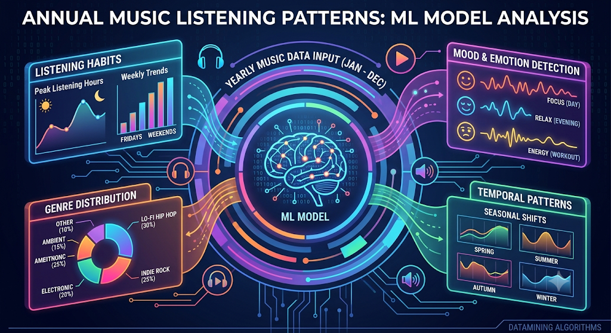

UNSUPERVISED LEARNING · AUDIO EMBEDDINGS
Listening Patterns
10,400+ Tracks
5 Audio Vectors
K-Means & PCA
Extracted a full year of Spotify streaming telemetry across high-dimensional audio features (valence, tempo, acousticness). Discovered cyclical circadian listening habits and distinct seasonal mood shifts using K-Means and dimensionality reduction.
01 / Input
→
10,400+ Spotify Web API track streaming logs
02 / Vectors
→
MinMax normalization across 5 acoustic dimensions
03 / Model
→
K-Means clustering + PCA orthogonal projection
04 / Result
→
Mapped winter/summer phase shifts in listening valence